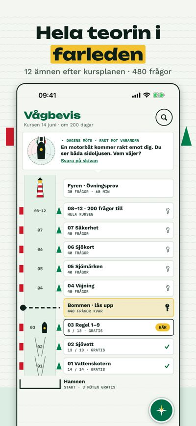
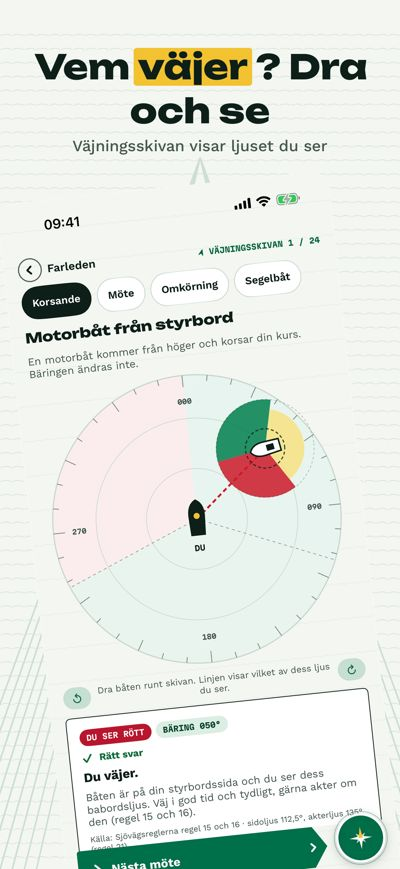
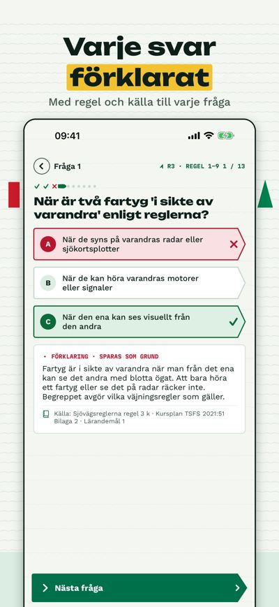

Vågbevis – teori för förarbevis för vattenskoter
Hela teorin i farleden
Vågbevis tar dig genom teorin för förarbevis för vattenskoter som en farled: tolv ämnen efter kursplanen, från sjövägsreglerna och sjömärkena till säkerhet, miljö och ansvar. På väjningsskivan drar du en båt runt din vattenskoter och ser direkt vem som väjer.



- 480 egna frågor i 12 ämnen efter kursplanen
- Förklaring med regel och källa till varje svar
- Väjningsskivan: dra båten och se vilket ljus du ser och vem som väjer
- 60 märkeskort: laterala, kardinala och sjövägmärken
- Övningsprov 30 frågor på 60 minuter, resultat som kompassros
- Dina fel blir grund tills du svarat rätt två gånger i rad
- Fungerar utan internet, inget konto
- Gratis: ämne 1–3. Hela kursen: engångsköp, delas med Familjedelning
Vågbevis är ingen myndighet och ingen utbildare. Förarbevis kräver kurs och godkänt prov hos en utbildare.
Snart på App Store
Support · Integritet